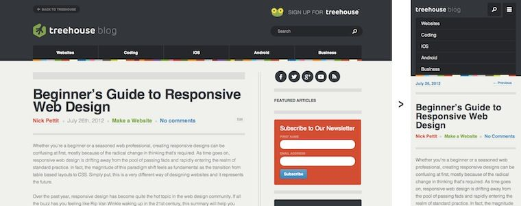

Beginner’s Guide to Responsive Web Design

Whether you’re a beginner or a seasoned web professional, creating responsive designs can be confusing at first, mostly because of the radical change in thinking that’s required. As time goes on, responsive web design is drifting away from the pool of passing fads and rapidly entering the realm of standard practice. In fact, the magnitude of this paradigm shift feels as fundamental as the transition from table based layouts to CSS. Simply put, this is a very different way of designing websites and it represents the future.
Free trial on Treehouse: Do you want to learn more about responsive web design? Try a free trial on Treehouse.
Over the past year, responsive design has become quite the hot topic in the web design community. If all the buzz has you feeling like Rip Van Winkle waking up in the 21st century, this summary will help you catch up with the times.
What is responsive web design?
Let’s just get right into it: Believe it or not, the Treehouse blog that you’re reading this article on is actually a responsive design! To see it in action, open this article on a desktop browser and slowly make the browser thinner and wider. You should see the layout magically adjust itself to more comfortably fit the new width of the browser, even if you make the page as skinny as the resolution of a mobile phone. Here are some screenshots of what the Think Vitamin design looks like at various screen resolutions:


It’s hard to talk about responsive design without mentioning its creator, Ethan Marcotte. If you haven’t read his seminal article about responsive web design, I highly recommend you check it out (seriously, this is required reading). In the article, Ethan discusses all the key ideas that form responsive web design; and that’s really what responsive design is, technically. It’s not a single piece of technology, but rather, a set of techniques and ideas that form a whole. This is one of the main sources of confusion, and in a moment we’ll break things down and take a look at each part.
So, what is responsive design exactly? Actually, a better question to ask might be, what problem does responsive web design solve? Well, as you may have noticed, computers aren’t the only piece of hardware with a web browser anymore. I might get myself in trouble by saying this, but the iPhone was one of the first mobile devices to feature a really great web browser, and it really put the spotlight on upgrading the experience of the mobile web. Many other devices followed suit and, seemingly overnight, the face of the mobile web had changed.
The changing landscape of web browsers meant that users expectations also changed; people expected to be able to browse the web on their phones just as easily as they browse the web on a desktop computer. So, in response to this (if you’ll excuse the pun) the web design community started creating mobile versions of their websites. In hindsight, this wasn’t really the way forward, but at the time it seemed like a reasonable idea. Every website would have their normal ‘desktop’ version of their site, and as a bonus, a ‘mobile’ version.
Technology never stops marching forward, so not long after the phone hardware market had been revolutionized, other form factors surged in popularity. In addition to phones and personal computers, devices like touchscreen tablets and small notebook computers (netbooks, if you prefer the term) started appearing everywhere.
It’s not just small screens, either. Large, high-resolution displays are starting to become much more common than they used to be, and it would be a waste for web designers to not take advantage of this.
In summary, the spectrum of screen sizes and resolutions is widening every day, and creating a different version of a website that targets each individual device is not a practical way forward. This is the problem that responsive web design addresses head on.
Previously, I mentioned that responsive web design is not a single piece of technology, but rather, a collection of techniques and ideas. Now that we have a better idea of the problem space we’re addressing, let’s take a look at each part of the solution.
Fluid Grids
The first key idea behind responsive design is the usage of what’s known as a fluid grid. In recent memory, creating a ‘liquid layout’ that expands with the page hasn’t been quite as popular as creating fixed width layouts; page designs that are a fixed number of pixels across, and then centered on the page. However, when one considers the huge number of screen resolutions present in today’s market, the benefit of liquid layouts is too great to ignore.
Fluid grids go a few steps beyond the traditional liquid layout. Instead of designing a layout based on rigid pixels or arbitrary percentage values, a fluid grid is more carefully designed in terms of proportions. This way, when a layout is squeezed onto a tiny mobile device or stretched across a huge screen, all of the elements in the layout will resize their widths in relation to one another.
In order to calculate the proportions for each page element, you must divide the target element by its context. Currently, the best way to do this is to first create a high fidelity mockup in a pixel based imaged editor, like Photoshop. With your high fidelity mockup in hand, you can measure a page element and divide it by the full width of the page. For example, if your layout is a typical size like 960 pixels across, then this would be your “container” value. Then, let’s say that our target element is some arbitrary value, like 300 pixels wide. If we multiply the result by 100, we get the percentage value of 31.25% which we can apply to the target element. Here’s the math:

If your values don’t work out so neatly, and you get some floating point value with many numbers after the decimal, don’t round the value! We humans may enjoy nice neat numbers and making our code look pretty, but your computer (and the final look of your design) will benefit from the seemingly excessive mathematical precision.
Fluid grids are a very important part of creating a responsive design, but they can only take us so far. When the width of the browser becomes too narrow, the design can start to severely break down. For example, a complex three-column layout isn’t going to work very well on a small mobile phone. Fortunately, responsive design has taken care of this problem by using media queries.
Media Queries
The second part of responsive design is CSS3 media queries, which currently enjoy decent support across many modern browsers. If you’re not familiar with CSS3 media queries, they basically allow you to gather data about the site visitor and use it to conditionally apply CSS styles. For our purposes, we’re primarily interested in the min-width media feature, which allows us to apply specific CSS styles if the browser window drops below a particular width that we can specify. If we wanted to apply some styling to mobile phones, our media query might look something like the following.
@media screen and (min-width: 480px) {
.content {
float: left;
}
.social_icons {
display: none
}
// and so on...
}
Using a series of media queries like this, we can work our way up towards larger resolutions. The set of pixel widths I recommend targeting are as follows:
- 320px
- 480px
- 600px
- 768px
- 900px
- 1200px
Again, these are just recommended, and should serve as a starting point. In an ideal world, you would adjust your layout to perfectly match every device width, but often times you have to pick and choose where you spend your efforts. From a more practical perspective, the resolutions that a design targets will be based on the resolutions of the people using that design, time and budget constraints, highly contextual situations, and so on. In summary, when deciding what resolutions to target, you should use your judgement. Targeting more resolutions is going to take more time, and assuming you’re not an immortal being with unlimited time, that effort should be spent carefully.
Again, to see a responsive design in action, simply open this article up on a desktop browser and slowly resize the browser to make it thinner. You should see all the page elements adjusting themselves automagically to fit the new width, going all the way down to the size of a mobile browser.
Resources
Responsive web design is about a year old now, and there are plenty of resources that can help you learn more about it. On our high-quality video training service Treehouse, we have many videos that go in depth on the topic. Here are some links:
- Responsive Web Design Video Course on Treehouse
- Video: Introduction to Responsive Web Design
- Ethan Marcotte’s article on Responsive Web Design
- The W3C specification for CSS3 Media Queries
- A great roundup of responsive design techniques via Smashing Magazine
- A large list of responsive design resources
Hopefully this article helped, but if you’re still feeling confused about responsive design, don’t be afraid to leave a question or comment. If you’re already utilizing responsive web design in your site or web application, share the link here so we can see!
Bonus
We’re starting to add free Youtube videos on responsive web design so if you’re interested in learning more, you can subscribe to our channel here: http://trhou.se/subscribe-treehouse-yt
Here’s a video to start:
Comments on this article are now closed. Check out our updated article: The 2014 Guide to Responsive Web Design